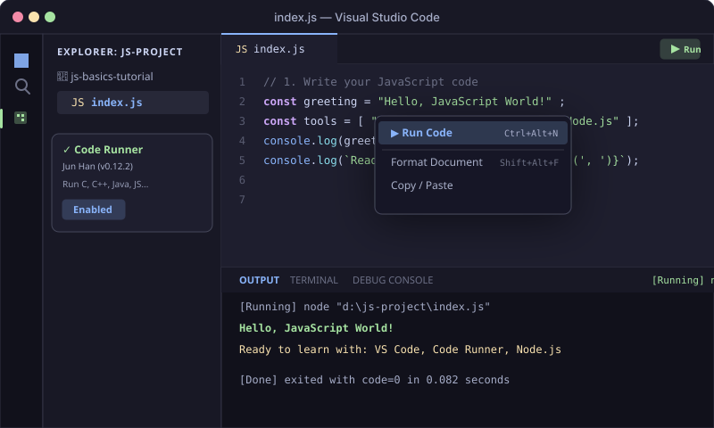

Introduction to JavaScript
What is JavaScript, how it was born, and why it powers everything today.
What is JavaScript?
JavaScript (JS) is a high-level, lightweight, interpreted (or Just-In-Time compiled) programming language with first-class functions. While it became famous as the scripting language for dynamic web pages, modern JavaScript runs on servers (via Node.js and Deno), cloud functions, mobile apps (React Native), and desktop apps (Electron / VS Code itself).
In the Browser (Client-side)
Interacts with HTML/CSS, responds to user clicks, animates UI elements, fetches data from APIs without reloading the page, and manages client state.
In Node.js (Server-side)
Executes directly on your computer or server using Google Chrome's high-speed V8 Engine. Reads files, talks to databases, builds REST APIs, and runs command-line tools.
A Quick History Timeline
Created in 10 Days by Brendan Eich
Brendan Eich engineered "Mocha" (later renamed LiveScript, then JavaScript) at Netscape Communications to bring web pages alive.
Standardization under ECMAScript (ES6 Revolution)
To avoid browser fragmentation, JS was standardized as ECMAScript (ES). In 2015, ES6 (ECMAScript 2015) modernized the language with `let`, `const`, arrow functions, template literals, and classes.
Ryan Dahl creates Node.js & Universal JS
Node.js brought the V8 JS engine outside the browser, transforming JavaScript into one of the world's most versatile, widely used full-stack languages.
VS Code Setup & Running Code
Get your professional local development environment ready in under 3 minutes.
To write and execute JavaScript like a professional developer on your local computer, we use Visual Studio Code (VS Code) with the popular Code Runner extension.
Download and Install VS Code
Head to the official website and download the free installer for your operating system (Windows, macOS, or Linux):
🔗 Download Visual Studio Code (code.visualstudio.com)Install Node.js (JavaScript Runtime)
Why it's required: VS Code's Code Runner extension executes your JavaScript files locally by passing them to Node.js in the background. Without Node.js installed, your local computer cannot execute standalone .js files outside a browser.
Download the recommended LTS (Long Term Support) version from the official site:
🟢 Download Node.js LTS (nodejs.org)
Installation Steps: Run the downloaded installer (.msi on Windows or .pkg on macOS), keep all default settings selected, and click Next → Next → Install → Finish.
Verify Installation: Open your Terminal or Command Prompt (or inside VS Code with Ctrl+`) and run:
# Verify Node.js is installed
node -v
# Verify npm (Node Package Manager) is installed
npm -vInstall the "Code Runner" Extension
Open VS Code, press Ctrl+Shift+X (or Cmd+Shift+X on Mac) to open the Extensions tab. Search for Code Runner by Jun Han and click Install.
Create Your First JavaScript File
Create an empty folder on your computer (e.g. my-js-practice), open it in VS Code (File → Open Folder), and create a new file named index.js.
Run Code & View Output
Paste some JavaScript into index.js, save it (Ctrl+S), then run it by either:
- Pressing Ctrl+Alt+N (or Cmd+Option+N on Mac)
- Right-clicking anywhere in the editor and selecting "Run Code"
- Clicking the ▶ Run play button icon at the top right of the editor.
The execution output will instantly appear in the bottom OUTPUT panel!

// Welcome to JavaScript! Test this in VS Code or run it right here:
const student = "Future Developer";
const tools = ["VS Code", "Code Runner", "Node.js"];
console.log("==============================");
console.log(`Hello, ${student}!`);
console.log(`Your toolkit is ready: ${tools.join(" + ")}`);
console.log("Happy Coding!");
console.log("==============================");Variables & Scoping
Storing data with var, let, and const, understanding scope boundaries, and hoisting.
Variables are containers for storing data values. In modern JavaScript, we have three keywords to declare variables: var, let, and const.
| Keyword | Scope | Re-assignable? | Re-declarable? | Hoisted? | Best Practice Recommendation |
|---|---|---|---|---|---|
const |
Block { } |
✖ No | ✖ No | Yes (TDZ - Temporal Dead Zone) | Default choice for all values that won't be reassigned. |
let |
Block { } |
✔ Yes | ✖ No | Yes (TDZ - Temporal Dead Zone) | Use when you know the value will change (e.g., loop counters). |
var |
Function / Global | ✔ Yes | ✔ Yes | Yes (Initialized as undefined) |
Avoid in modern code due to scope leaks and bugs. |
Understanding Scope: Global, Function, and Block
Scope determines where variables can be accessed in your code:
1. Global Scope
Declared outside any function or block. Accessible from anywhere in your script.
2. Function Scope
Declared inside a function. Only accessible within that function body.
3. Block Scope
Declared with let or const inside curly braces { } (like an if or for block).
// 1. GLOBAL SCOPE
const globalAppTitle = "Weather Dashboard";
function checkWeather() {
// 2. FUNCTION SCOPE
const secretApiKey = "xyz-12345";
let temperature = 24;
if (temperature > 20) {
// 3. BLOCK SCOPE (let & const are locked inside this if-block)
const advice = "Wear light clothes, it's pleasant!";
var legacyVar = "var leaks outside this block!";
console.log("Inside block:", advice);
}
// advice is NOT accessible here (ReferenceError if called)
console.log("Outside block (var leaked):", legacyVar);
console.log("Inside function:", globalAppTitle, "- Temp:", temperature);
}
checkWeather();
// 4. CONST REASSIGNMENT DEMO:
const maxScore = 100;
// maxScore = 150; // Uncommenting this will throw: TypeError: Assignment to constant variable
console.log("Max Score Constant:", maxScore);var declarations are hoisted to the top and initialized as undefined. In contrast, let and const are hoisted but not initialized—they reside in the Temporal Dead Zone (TDZ) until their line of code is reached. Accessing them before their declaration causes a ReferenceError, protecting you from subtle bugs!
Practice Challenge: Variables in VS Code
Copy the code snippet above into your index.js file in VS Code and try these adjustments:
- Create a
constvariable holding your name and aletvariable holding your age. - Increment your age by 1 (
age = age + 1) and log it withconsole.log(). - Try reassigning your name constant (e.g.
name = "New Name"), run with Ctrl+Alt+N, and observe the exact error in the terminal.
const by default. Only switch to let when you explicitly reassign the variable.
Conditionals & Decision Making
Guiding code execution paths using if/else, switch, and the ternary operator.
Conditionals let your program make decisions based on whether an expression evaluates to true or false.
if / else if / else
Standard branching for evaluating multiple comparison expressions sequentially.
switch Statement
Clean matching when comparing a single variable against many discrete fixed values.
Ternary Operator ? :
A compact, one-line shorthand for simple if/else assignments.
// 1. IF / ELSE IF / ELSE
const score = 88;
if (score >= 90) {
console.log("Grade: A (Outstanding! 🎉)");
} else if (score >= 80) {
console.log("Grade: B (Great job! 👍)");
} else if (score >= 70) {
console.log("Grade: C (Good effort)");
} else {
console.log("Grade: F (Needs practice)");
}
// 2. SWITCH STATEMENT
const userRole = "admin";
switch (userRole) {
case "admin":
console.log("Access Level: Full Admin Permissions");
break; // Remember break to prevent fallthrough!
case "editor":
console.log("Access Level: Edit & Publish Content");
break;
case "viewer":
console.log("Access Level: Read-only");
break;
default:
console.log("Access Level: Guest (Login Required)");
}
// 3. TERNARY OPERATOR (condition ? exprIfTrue : exprIfFalse)
const age = 19;
const canVote = age >= 18 ? "Eligible to vote ✔" : "Too young to vote ✖";
console.log(`Voter Status: ${canVote}`);Practice Challenge: Conditionals in VS Code
Paste the snippet into VS Code and test these scenarios:
- Change
score = 65and verify the output. - Change
userRole = "manager"and observe how thedefaultcase triggers. - Write a ternary operator that checks if a number
const temp = 32;is below freezing (temp <= 0).
break; at the end of each switch case unless you intentionally want execution to continue into the next case.
Loops & Iteration
Automating repetitive tasks with for, while, do...while, for...of, and for...in.
Loops allow you to repeat a block of code multiple times until a specific condition is met.
for Loop
Standard loop with initializer, condition, and increment expression.
while & do...while
while checks before running; do...while guarantees running at least once before checking.
for...of (Iterables / Arrays)
Iterates directly through the values of an array, string, or set.
for...in (Object Keys)
Iterates through the keys / property names of an object.
// 1. CLASSIC FOR LOOP (0 to 3)
console.log("--- Classic for Loop ---");
for (let i = 1; i <= 3; i++) {
console.log(`Lap #${i}`);
}
// 2. WHILE LOOP
console.log("--- While Loop ---");
let count = 3;
while (count > 0) {
console.log(`Countdown: ${count}`);
count--;
}
console.log("Blast off! 🚀");
// 3. DO...WHILE LOOP (Executes at least once)
console.log("--- Do-While Loop ---");
let attempts = 0;
do {
console.log(`Attempt performed: ${attempts + 1}`);
attempts++;
} while (attempts < 1);
// 4. FOR...OF (Looping over Array Values)
console.log("--- for...of Loop (Arrays) ---");
const frameworks = ["React", "Vue", "Node"];
for (const name of frameworks) {
console.log(`Framework: ${name}`);
}
// 5. FOR...IN (Looping over Object Keys)
console.log("--- for...in Loop (Objects) ---");
const car = { brand: "Tesla", model: "Model 3", year: 2024 };
for (const key in car) {
console.log(`${key}: ${car[key]}`);
}Practice Challenge: Loops in VS Code
Copy the code into index.js and try these tests:
- Write a
forloop that logs only even numbers between 2 and 10. - Add a
breakstatement inside the for loop to stop as soon as it reaches 6. - Create an array of your favorite 3 foods and loop over them using a
for...ofloop.
while loop, always ensure your counter variable updates (e.g. count-- or count++) so you don't create an accidental infinite loop!
Arrays & Array Methods
Working with ordered lists, zero-based indexing, and the 12 essential array methods.
An Array is an ordered, zero-indexed list of values. JavaScript provides powerful built-in methods to manipulate, filter, and transform array data.
// Array Creation & Indexing (Zero-based: 0, 1, 2...)
const fruits = ["Apple", "Banana", "Cherry"];
console.log("First item (index 0):", fruits[0]); // Apple
console.log("Second item (index 1):", fruits[1]); // Banana
console.log("Total items (.length):", fruits.length); // 3
console.log("Last item:", fruits[fruits.length - 1]); // Cherry12 Essential Array Methods (with Copyable Standalone Examples)
// ========================================================
// 1. push() — Adds item to the END of array
// ========================================================
const cart1 = ["Laptop", "Mouse"];
cart1.push("Keyboard");
console.log("1. push output:", cart1);
// Output: [ 'Laptop', 'Mouse', 'Keyboard' ]
// ========================================================
// 2. pop() — Removes and returns the LAST item
// ========================================================
const cart2 = ["Laptop", "Mouse", "Keyboard"];
const removedLast = cart2.pop();
console.log("2. pop output:", cart2, "| Removed:", removedLast);
// Output: [ 'Laptop', 'Mouse' ] | Removed: Keyboard
// ========================================================
// 3. shift() — Removes and returns the FIRST item
// ========================================================
const queue1 = ["First", "Second", "Third"];
const served = queue1.shift();
console.log("3. shift output:", queue1, "| Served:", served);
// Output: [ 'Second', 'Third' ] | Served: First
// ========================================================
// 4. unshift() — Adds item to the BEGINNING of array
// ========================================================
const queue2 = ["Second", "Third"];
queue2.unshift("VIP-First");
console.log("4. unshift output:", queue2);
// Output: [ 'VIP-First', 'Second', 'Third' ]
// ========================================================
// 5. forEach() — Runs a function on each element
// ========================================================
const colors = ["Red", "Green", "Blue"];
console.log("5. forEach output:");
colors.forEach((color, index) => {
console.log(` Color #${index + 1}: ${color}`);
});
// Output: Color #1: Red, Color #2: Green, Color #3: Blue
// ========================================================
// 6. map() — Creates a NEW array by transforming each item
// ========================================================
const pricesUSD = [10, 20, 30];
const withTax = pricesUSD.map(price => price * 1.1);
console.log("6. map output:", withTax);
// Output: [ 11, 22, 33 ]
// ========================================================
// 7. filter() — Creates a NEW array with items matching a condition
// ========================================================
const ages = [12, 18, 25, 8, 30];
const adults = ages.filter(age => age >= 18);
console.log("7. filter output:", adults);
// Output: [ 18, 25, 30 ]
// ========================================================
// 8. find() — Returns the FIRST element matching condition
// ========================================================
const users = [
{ id: 1, name: "Alice" },
{ id: 2, name: "Bob" },
{ id: 3, name: "Charlie" }
];
const foundUser = users.find(u => u.id === 2);
console.log("8. find output:", foundUser);
// Output: { id: 2, name: 'Bob' }
// ========================================================
// 9. reduce() — Condenses array into a single accumulated value
// ========================================================
const expenses = [25, 50, 25];
const totalSpent = expenses.reduce((accumulator, current) => accumulator + current, 0);
console.log("9. reduce output (Total):", totalSpent);
// Output: 100
// ========================================================
// 10. includes() — Checks if array contains value (true/false)
// ========================================================
const allowedRoles = ["admin", "editor"];
const hasAdmin = allowedRoles.includes("admin");
const hasGuest = allowedRoles.includes("guest");
console.log("10. includes output:", "hasAdmin =", hasAdmin, "| hasGuest =", hasGuest);
// Output: hasAdmin = true | hasGuest = false
// ========================================================
// 11. slice(start, end) — Non-destructive shallow copy of portion
// ========================================================
const letters = ["A", "B", "C", "D", "E"];
const slicedPart = letters.slice(1, 4); // indices 1, 2, 3 (end is exclusive)
console.log("11. slice output:", slicedPart, "| Original unchanged:", letters);
// Output: [ 'B', 'C', 'D' ] | Original unchanged: [ 'A', 'B', 'C', 'D', 'E' ]
// ========================================================
// 12. splice(start, deleteCount, ...itemsToAdd) — Mutates in-place
// ========================================================
const playlist = ["Song 1", "Song 2", "Song 3"];
playlist.splice(1, 1, "New Feature Song"); // Replaces 1 item at index 1
console.log("12. splice output:", playlist);
// Output: [ 'Song 1', 'New Feature Song', 'Song 3' ]Practice Challenge: Array Methods in VS Code
Copy the array methods into VS Code and complete this mini-project:
- Create an array of numbers:
const scores = [45, 82, 91, 60, 78, 99]; - Use
.filter()to select only scores above 75 (Passing grades). - Use
.map()to add 5 bonus points to every score. - Use
.reduce()to calculate the average score of the group.
slice() creates a safe copy without modifying the original array, while splice() modifies the original array directly.
Strings & String Methods
Text manipulation, template literals ${}, and 10 core string methods.
In JavaScript, text is stored as a String. Strings are immutable sequences of characters wrapped in single quotes ('...'), double quotes ("..."), or modern template literals (`...`).
Why Template Literals (Backticks ` `) Are Modern Best Practice
Template literals allow multiline strings and dynamic string interpolation using ${expression} syntax without messy plus (+) concatenations.
// 1. CREATION & TEMPLATE LITERALS
const language = "JavaScript";
const year = 1995;
const message = `${language} was released in ${year} (over ${2025 - year} years ago!)`;
console.log("1. Template Literal:", message);
// Output: JavaScript was released in 1995 (over 30 years ago!)
// 2. length — Counts character count
const password = "superSecret123";
console.log("2. length:", password.length);
// Output: 14
// 3. slice(start, end) — Extracts part of string
const fullUrl = "https://example.com/blog";
const protocol = fullUrl.slice(0, 5);
console.log("3. slice:", protocol);
// Output: https
// 4. substring(start, end) — Extracts between indices
const text = "Developer";
console.log("4. substring:", text.substring(0, 3));
// Output: Dev
// 5. split(separator) — Splits string into Array
const csvTags = "html,css,javascript,react";
const tagsArray = csvTags.split(",");
console.log("5. split:", tagsArray);
// Output: [ 'html', 'css', 'javascript', 'react' ]
// 6. trim() — Removes leading and trailing whitespaces
const rawInput = " user_email@test.com ";
const cleanEmail = rawInput.trim();
console.log("6. trim:", `'${cleanEmail}'`);
// Output: 'user_email@test.com'
// 7. toUpperCase() & toLowerCase() — Case conversion
const greeting = "Hello World";
console.log("7. Upper:", greeting.toUpperCase(), "| Lower:", greeting.toLowerCase());
// Output: Upper: HELLO WORLD | Lower: hello world
// 8. includes(substring) — Checks if text is found (true/false)
const emailCheck = "alex@company.org";
console.log("8. includes '@':", emailCheck.includes("@"));
// Output: true
// 9. replace() & replaceAll() — Swaps search match with replacement
const oldPhrase = "I like coffee. Good coffee!";
const newPhrase = oldPhrase.replace("coffee", "tea"); // replaces first match
console.log("9. replace:", newPhrase);
// Output: I like tea. Good coffee!
// 10. concat() — Joins two or more strings together
const strA = "Frontend ";
const strB = "Developer";
console.log("10. concat:", strA.concat(strB));
// Output: Frontend DeveloperPractice Challenge: Strings in VS Code
Try these exercises in your index.js file:
- Take a user input string:
const userInput = " John.DOE@example.COM "; - Clean it by trimming whitespace and converting it entirely to lower-case.
- Use
.split("@")to separate the username from the domain. - Format the output into a friendly message using template literals:
`User: ${user}, Domain: ${domain}`.
.toUpperCase() or .trim() do not alter the original string—they return a fresh new string!
Objects & Object Methods
Structuring complex data with key-value pairs, nested objects, functions inside objects, and utility methods.
An Object is a collection of related properties and methods stored as key-value pairs. Objects are the backbone of JavaScript data structures.
Dot Notation (user.name)
Standard, clean, and fast when you know the exact property key name beforehand.
Bracket Notation (user["name"])
Mandatory when accessing properties dynamically via variables or keys with special characters/spaces.
// 1. OBJECT CREATION & PROPERTIES
const developer = {
firstName: "Sarah",
lastName: "Connor",
age: 28,
isEmployed: true,
skills: ["JavaScript", "HTML", "CSS"],
// Nested Object
location: {
city: "San Francisco",
country: "USA"
},
// Method inside Object ('this' refers to the developer object)
getFullName() {
return `${this.firstName} ${this.lastName}`;
},
greet() {
return `Hi, I'm ${this.firstName} from ${this.location.city}!`;
}
};
// 2. ACCESSING PROPERTIES
console.log("Dot notation:", developer.firstName); // Sarah
console.log("Bracket notation:", developer["age"]); // 28
console.log("Nested property:", developer.location.city); // San Francisco
console.log("Calling method:", developer.getFullName()); // Sarah Connor
console.log("Calling greet:", developer.greet()); // Hi, I'm Sarah from San Francisco!
// 3. OBJECT UTILITY METHODS (Keys, Values, Entries)
const book = {
title: "Eloquent JavaScript",
author: "Marijn Haverbeke",
pages: 472
};
console.log("--- Object Utilities ---");
console.log("Object.keys():", Object.keys(book));
// Output: [ 'title', 'author', 'pages' ]
console.log("Object.values():", Object.values(book));
// Output: [ 'Eloquent JavaScript', 'Marijn Haverbeke', 472 ]
console.log("Object.entries():", Object.entries(book));
// Output: [ [ 'title', 'Eloquent JavaScript' ], [ 'author', 'Marijn Haverbeke' ], [ 'pages', 472 ] ]Practice Challenge: Objects in VS Code
Copy the code snippet into VS Code and try these tasks:
- Add a new property
githubHandle: "@sarahc"to thedeveloperobject. - Add a new method
haveBirthday()that incrementsthis.ageby 1 and returns the new age. - Use
Object.entries()in afor...ofloop to print every key and value in format:"key -> value".
greet() { ... }) automatically binds this to the owning object, making it clean and intuitive.
🚀 Next Steps on Your JavaScript Journey
You have now covered all the core building blocks of JavaScript: Variables & Scoping, Conditionals, Loops, Arrays, Strings, and Objects!
Keep practicing daily inside VS Code using Code Runner (Ctrl+Alt+N). Try modifying values, writing your own functions, and testing new scenarios.